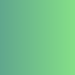

Category Theory
→ General stuff
→ Set
→ Category Theory in Programming
→ The Empty Set
→ The Singleton Set
→ The Two-Element Set
→ Hask
→ Weak and Strong Typing
→ Other Categories
→ The Category \(\varnothing\)
→ Free Categories
→ Monoids
→ Thin Categories
→ Orders
→ Kleisli Categories
→ Categories through Universal Construction
→ Set
→ Category Theory in Programming
→ The Empty Set
→ The Singleton Set
→ The Two-Element Set
→ Hask
→ Weak and Strong Typing
→ Other Categories
→ The Category \(\varnothing\)
→ Free Categories
→ Monoids
→ Thin Categories
→ Orders
→ Kleisli Categories
→ Categories through Universal Construction
These are my lecture notes on Bartosz Milewski's course on category theory. These are not meant as a comprehensive guide but rather a loose collection of definitions and short summaries.
General stuff
A category is a collection of objects along with arrows, called morphisms, between those objects. It is therefore similar to a labeled directed graph.A category has two properties: composition of morphisms and identity. Composition in category theory is similar to composition of functions and behaves associatively. Identity means that every object has an identity morphism.


A morphism \(f: a \rightarrow b\) is called
- an epimorphism (or epic) if it is right-cancellable, i.e. \(g_1 \circ f = g_2 \circ f\) implies \(g_1 = g_2\) for all \(c\) and all \(g_1, g_2: b \rightarrow c\)
- a monomorphism (or monic) if it is left-cancellable, i.e. \(f \circ g_1 = f \circ g_2\) implies \(g_1 = g_2\) for all \(c\) and all \(g_1, g_2: c \rightarrow a\)
- a bimorphism if it is both a monomorphism and an epimorphism
- An isomorphism if it has an inverse, i.e. if there exists an morphism \(f^{-1}: b \rightarrow a\) with \(f^{-1} \circ f = id_a\) and \(f \circ f^{-1} = id_b\).
Set
Set (capitalized) is the category of sets and functions. Set is a category because there is an identity function for each set which becomes the identity morphism in Set and function composition (which becomes morphism composition in Set) is associative.In Set: surjective functions correspond to epimorphisms, injective functions correspond to monomorphisms and bijective functions correspond to bimorphisms. In Set all bimorphisms are isomorphisms since all bijective functions are invertible.
Also notice the distinction between isomorphisms and bimorphisms. While in set theory a function that is bijective (both injective and surjective) is invertible, in category theory a bimorphism (which is both epic and monic) is not necessarily invertible (an isomorphism).
Category Theory in Programming
In a general sense, types in programming languages are sets:- Boolean represents the set \( \{True, False\}\)
- Int represents a subset of \(\mathbb{N}\)
- Float/Double represents a subset of \(\mathbb{Q}\)
If we go in the other direction we can ask which type in programming specific (special) sets correspond to:
The Empty Set
The empty set does not correspond to any type in most imperative languages, it does however correspond to the type Void in Haskell (omitting the bottom element).We can define the following (uncallable) functions with Void in Haskell:
absurd :: Void → a
id_void :: Void → Void
a → Void. (If we called it with any argument, what could it return?)In mathematical logic, types/objects correspond to propositions and functions correspond to proofs. Therefore, the existence of a function between two propositions is equivalent to the existence of a proof. This ties in well with the functions we defined above if we take the type Void to correspond to False.
- The function
absurd :: Void → aexists, this corresponds to the fact that we can proof anything from starting from false assumptions. ("All even numbers are primes \(\implies\) 20 is a prime") - There exists no function of type
a → Void, we cannot prove falsity. (You cannot prove something that's false, it has no proof)
The Singleton Set
The (one element) singleton set has one element called() and we can build the unit function with it:unit :: a → ()
() → a. These individual functions are constant. In this way we can express elements of a set as functions, or in category theory as morphisms.For example for type Bool we can define the functions
true :: () → Bool
true _ = True
false :: () → Bool
false _ = False
() → a correspond to picking elements of sets.Such an object
() (called generalized element) that allows us to view individual elements of a set as morphisms does not exist for every category. In general, category theory abstracts over elements and looks at sets, functions and other things from a higher perspective.The Two-Element Set
The two element set is equivalent to the typeBool. It can also be defined as the sum of two units.
A function that returns a boolean is called a predicate.Hask
Hask (capitalized) is the category of types and functions in Haskell.Sidenote: There is an important difference between pure functions in programming and mathematical functions. Mathematical functions instantly evaluate to a certain result while functions in programming may not terminate. To avoid this issue a special element called bottom is added to all type-sets above and and a non-terminating function is said to return this bottom value. Furthermore is a mathematical function only equivalent to a pure and total function in programming because it can't have side effects and is defined for every argument.
Weak and Strong Typing
In a Set-like category with only a single object, any two function are composable. This is equivalent to a weakly typed language (or a language with only a single type). A strongly typed language is equivalent to a category with multiple objects.Therefore weak and strong typing aren't actually distinct concepts but instead is weak typing inside strong typing.
Other Categories
The Category \(\varnothing\)
The category \(\varnothing\) is the empty category. It contains no objects or morphisms. Similar to the empty set or the number zero it is not very useful by itself. It however becomes useful in the context of other categories.Free Categories
Every finite directed graph can be turned into a category by adding a finite number of arrows.- Add identiy arrows to each node/object (if they do not exist yet).
- For every pair of composable arrows \(f, g\), add their composition \(g \circ f\). Keep in mind that because of associativity, not all compositions have to be added (\((f \circ g) \circ h = f \circ (g \circ h)\)).
This method of creating a category is called free construction. We are not imposing any additional constraints other than those required by the definition of a category. A category creating in this way is called a free category.
Monoids
A category is called a monoid if it contains exactly one object. This object has to have at least one morphism, the identity, but it can have more. It is related to algebraic monoids (in group theory) in the following way:An algebraic monoid is a set along with an associative operation and a neutral element.
- Each element in the set along with the operation corresponds to a morphism from and to the single object.
- The neutral element corresponds to the identity morphism.
- The associativity of the operation corresponds to the associativity of morphism composition.
For example take the algebraic monoid of the natural numbers under addition. The associated monoid in category theory is a single object along with arrows, each corresponding to an element from \(A = \{+0, +1, +2, +3, \ldots\}\). We choose \(+0\) to be the identity morphism (\(\forall a \in A[ (+0)\circ a = a \land a\circ (+0) = a]\)). Since addition is associative, morphism composition is also associative.
In this way we can always create a category monoid from an algebraic monoid and vice versa.
Thin Categories
A category is called a thin category if every hom-set is either the empty set or a singleton set. This means that for any pair of objects \((a, b)\) there is at most one arrow going from \(a\) to \(b\). In such a category every morphism is an epi- and monomorphism. (The definition of epi/monomorphism includes "[..] for every pair of morphisms between a and b [..]" but in a thin category there is at most one morphisms between any two objects.)In a thin category a bimorphism is not necessarily invertible (i.e. an isomorphism).
Orders
Orders are categories where arrows are not necessarily functions but rather general relations.- A preorder is an order that is reflexive and composable (transitive). Every preorder is a thin category since for every pair of objects \((a, b)\) the hom-set is either empty (when \(a \nleq b\)) or a singleton set (when \(a \le b\)).
- A partial order is a preorder that is also antisymmetric. (It is therefore relexive, transitive and antisymmetric) A partial order induces a directed acyclic graph. A partially ordered set is called a poset.
- A total order is a partial order that is also connex (defined for any two objects - either \(a \le b\) or \(b \le a\)).
\(\le\) is a total order on \(\mathbb{R}\). It satisfies the requirements for categories (associative composability and identity) since it is a transitive and reflexive relation (composition is associative because there can never be more than one arrow between a pair of objects). It furthermore is transitive, antisymmetric and defined for any two real numbers.
Kleisli Categories
Given a category consisting of objects \(a, b, c,\ldots\) and mappings \(x→(m,x)\) a Kleisli category can be constructed as above.The mapping from \(a\) to \((m, a)\) is called a monad.
Categories through Universal Construction
A universal construction is a characterization of a particular type of object through its relationship with the rest of the universe. This allows us to define things like the empty set, singleton set, cartesian product, etc. in category theory, which in set theory are generally defined in terms of elements of sets.Example: Singleton set
The singleton set has the universal property that there is an arrow from every set to the singleton set. This property however is not uniquely characteristic of the singleton set since it in Set there are arrows from almost every set to every other set (apart from arrows from non-empty sets to void) However to the singleton set there is always exactly one arrow from all other sets. Using this we can define the singleton set in category theory without using the notion of elements.
Terminal objects generalize the relationship between the category Set and the singleton set. A terminal object in a category is an object that has a unique arrow coming from any other object. Therefore a terminal object \((\,)\) satisfies the condition for existence of an incoming arrow \(\forall a\, \exists f\colon a →(\,)\) and the condition for uniqueness of the incoming arrow \(\forall f\colon a → (\,), g\colon a → (\,) \implies f=g\).
Any sequence of arrows that lead from \(a\) to the terminal object \((\,)\) can be reduced through composition to a single arrow from \(a\) to \((\,)\). By the definition of the terminal object, this arrow is unique (for all paths, the composition is the same unique arrow). From this follows that all paths from \(a\) to \((\,)\) are in some sense equal.
Example: Terminal objects in orders
Since orders are thin categories and in thin categories there can be at most one arrow from \(a\) to \(b\), only the condition for existence above is relevant. In an order there exists an arrow \(a → b\) if \(a \le b\). Therefore for \(\forall a\, \exists f\colon a →(\,)\) to hold we know that \(\forall a\colon a \le (\,)\) must be true. From this follows that the terminal object of an order is largest object in the order. Such an object does not necessarily exist (for example in \(\mathbb{N}\)).
Example: Empty set
The empty set has the universal and uniquely defining property that it has exactly one outgoing arrow (the function absurd) to every object in Set.
This motivates the definition of initial objects of a category (analogous to terminal objects).
A category can have any number of terminal or initial objects.
Terminal (or initial) objects are isomorphic
Let \(a\) and \(b\) be terminal objects of a category. Then by the definition of terminal objects there exist unique morphisms \(f\colon a→b\) and \(g\colon b→a\). Let \(h=g\circ f\). Therefore \(h\) goes from \(a\) to \(a\). By the definition of a terminal object there can only be a single arrow from \(a\) to \(a\) so the identity \(\text{id}_a\) and \(h\) must be the same. Analogous for \(k=f\circ g\).
Therefore \(f \circ g = \text{id}_b\) and \(g \circ f = \text{id}_a\) which is the definition of an isomorphism. This isomorphism is unique since \(f\) and \(g\) are unique.